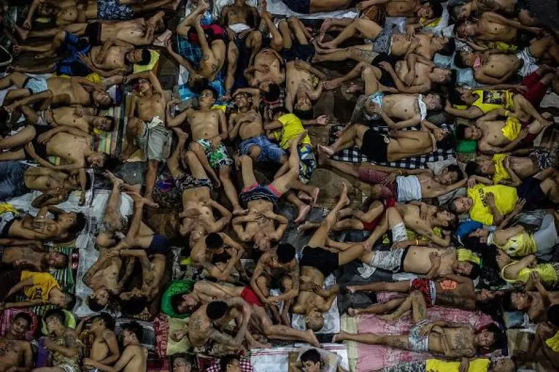

The crucial issue of jail overcrowding in the Philippines is not just simply a spatial problem but a procedural battle rooted in the lack of timely legal representation. While thousands of indigent Persons Deprived of Liberty (PDLs) remain detained are simply because they lack legal counsels that would help fast track their cases and eventually release them from detention centers. To address this, this proposed ICT project website shifts focus toward a dedicated Pro-bono Legal Integration Platform. It is primarily an online interface or gateway between congested jails and legal community since it employs artificially intelligent “Smart – Matching” algorithm in searching virtual or online law office with volunteer lawyers/law students rotating every 24 hours for real time video conference availability. By automating the identification of detainees eligible for bail, recognizance, or dismissal, the legal process “dead air” will be significantly minimized then totally eradicated.
Therefore, it also serves as a keystone to the courts and a measure of last resort prior to their forcible occupation by members of the community seeking food and shelter. While such affiliates are not enrolled in wellness centers or other rehabilitation programs, however, most do have outdoor camping lines which place their facilities geographically closer to the people who may wish to forcibly occupy them.